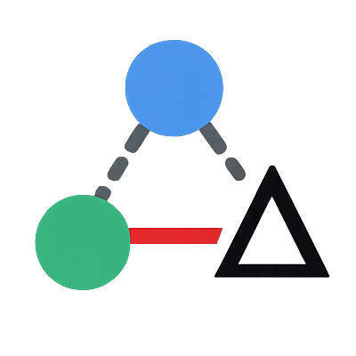

Compare RDF vocabularies with precision – spot added, removed, and changed resources
rdf-differ-ws is the heart of the RDF Differ application -- a self-hostable web service for computing differences between RDF vocabularies using application profile (AP) templates. It highlights added, removed, and modified resources (entities like classes and properties or any first-class citizen of your vocabulary) in a simple UI and API, making it easier to track knowledge graph evolution.
make